組み立てたコマ（ChatGPT の絵から）
Grok に頼む残りのコマ（grok/index.html）を、ChatGPT が描いた同じキャラクターの絵の部位（胴・頭・髪、上腕・前腕・太もも・すね）を切り出して、モーションの関節に合わせて並べ直したもの。全441枚。
左：ポーズの図 右：組み立てた絵（画素は全部 ChatGPT の絵なので、見た目は同じ人物）。
印（このブラウザにだけ残る）：使える＝そのまま使う／Grok の下絵に＝これを Grok に添付して「この絵を整えて」と頼む／だめ＝Grok に一から頼む。
作り直し：
左：ポーズの図 右：組み立てた絵（画素は全部 ChatGPT の絵なので、見た目は同じ人物）。
印（このブラウザにだけ残る）：使える＝そのまま使う／Grok の下絵に＝これを Grok に添付して「この絵を整えて」と頼む／だめ＝Grok に一から頼む。
作り直し：
tools/assemble/（README.md）アリア（戦士） 98枚
力が抜けて前へ崩れ、うなだれる 2枚
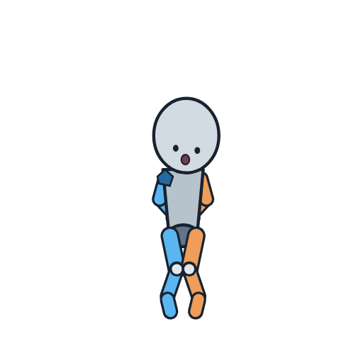
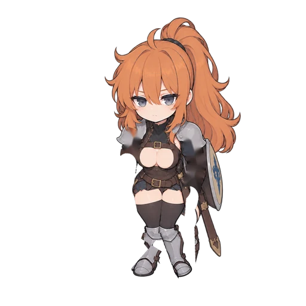
aria__afterglow_slump__front__0.png元：daze_sway__front__0 / daze_sway__front__2 / sit_recover__front__11
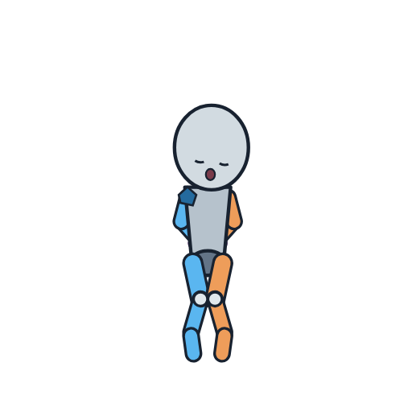
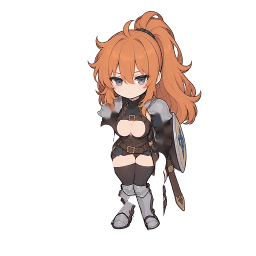
aria__afterglow_slump__front__5.png元：daze_sway__front__0 / daze_sway__front__2 / sit_recover__front__11
力が抜けて、拘束にもたれてうなだれる 2枚
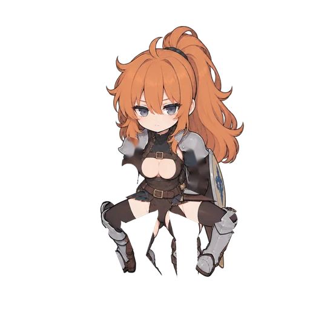
aria__afterglow_spread__front__0.png元：heavy__front__1 / sit_recover__front__11 / swing_abandon__front__3
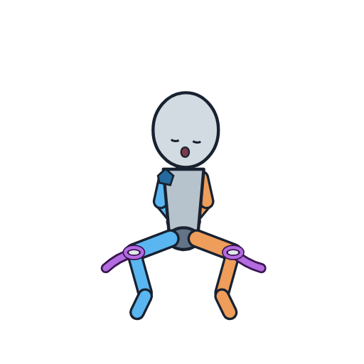
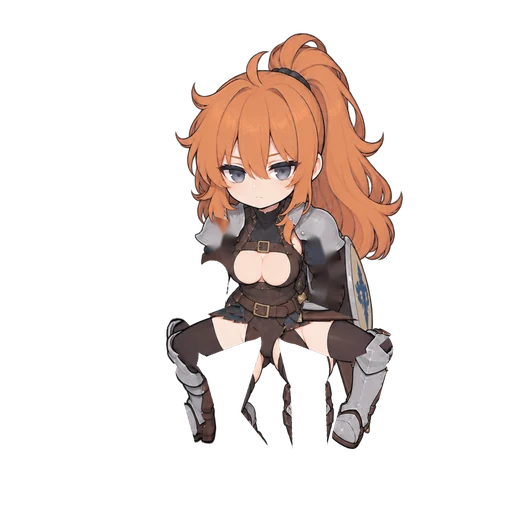
aria__afterglow_spread__front__5.png元：heavy__front__1 / sit_recover__front__11 / swing_abandon__front__3
足首をつかまれて後ろへ引かれ、よろけて四つん這いになる 1枚
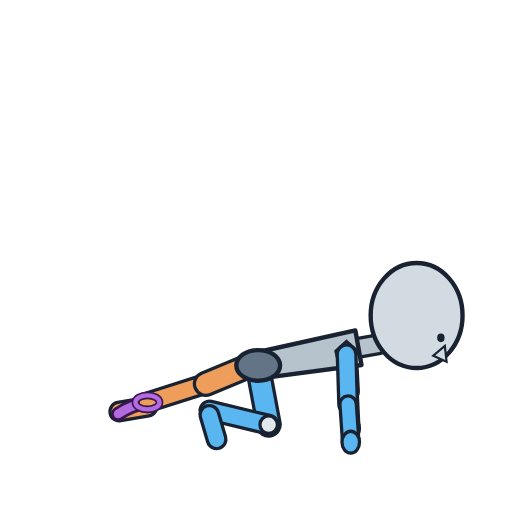
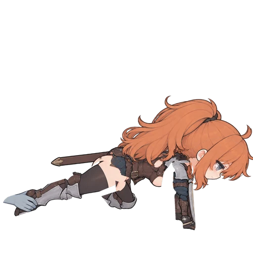
aria__ankle_grabbed__right__14.png元：ankle_grabbed__right__4 / trip_fall__right__11
後ろ手に縛られて身をよじる 2枚
aria__arms_behind_squirm__front__0.png元：gaze_trance__front__0 / gaze_trance__front__1 / shiver_hug__front__4 / sit_recover__front__9
aria__arms_behind_squirm__front__2.png元：daze_sway__front__2 / gaze_trance__front__0 / gaze_trance__front__1 / sit_recover__front__13 / sit_recover__front__5
後ろ手に縛られて振りほどこうとする 2枚
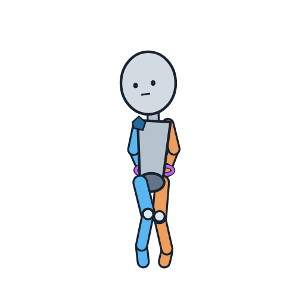
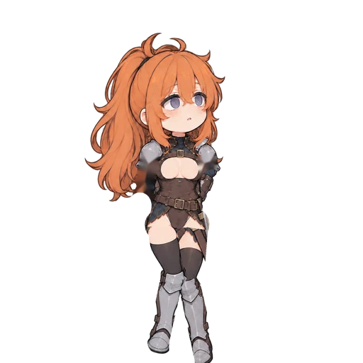
aria__arms_behind_wrench__front__0.png元：daze_sway__front__0 / gaze_trance__front__0 / shiver_hug__front__4 / sit_recover__front__13 / sit_recover__front__5
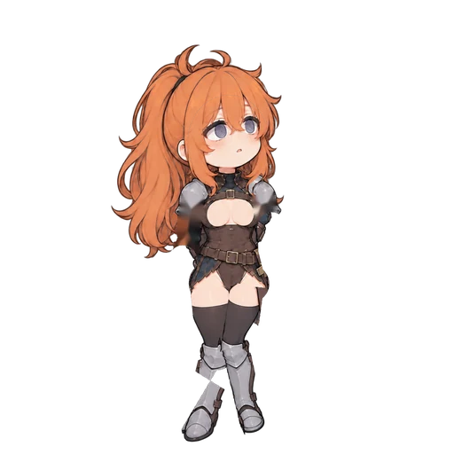
aria__arms_behind_wrench__front__5.png元：daze_sway__front__0 / daze_sway__front__2 / gaze_trance__front__0 / sit_recover__front__13 / sit_recover__front__5
前屈みで手首を前に縛られ、体を左右に揺らす 2枚
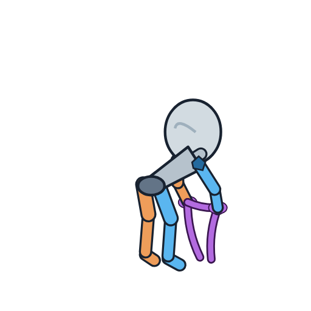
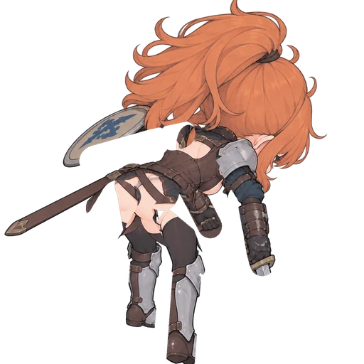
aria__bent_over__up_right__0.png元：heavy__up_right__6 / slash__up_right__3 / swing_abandon__up_right__3 / swing_abandon__up_right__5 / yoko__up_right__6
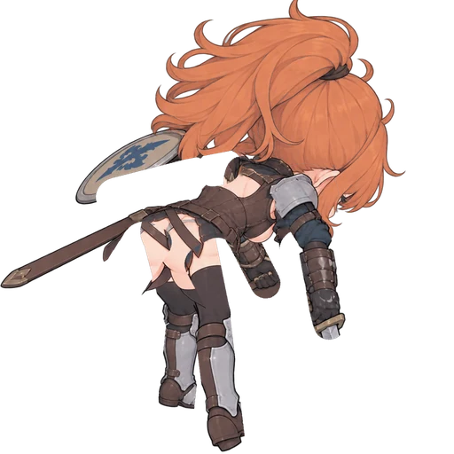
aria__bent_over__up_right__2.png元：heavy__up_right__6 / slash__up_right__3 / slash__up_right__7 / swing_abandon__up_right__3 / swing_abandon__up_right__5
手首を上から吊られたまま体が上下に揺れる 2枚
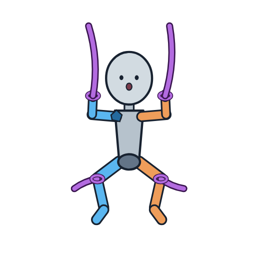
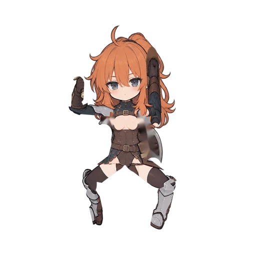
aria__bounce_hung__front__0.png元：heavy__front__1 / sit_recover__front__13 / swing_abandon__front__3 / thrust__front__4
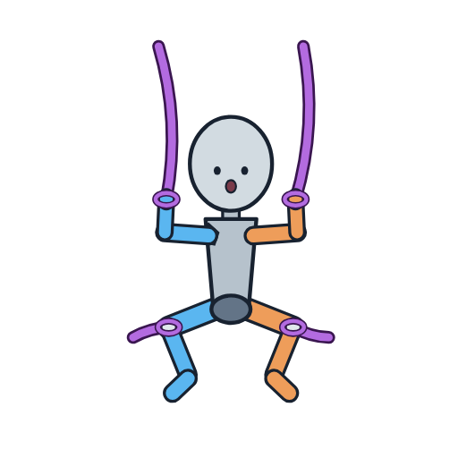
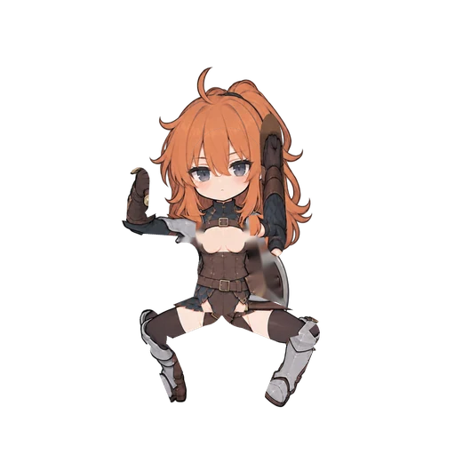
aria__bounce_hung__front__4.png元：heavy__front__1 / sit_recover__front__13 / swing_abandon__front__3 / thrust__front__4
後ろ手で、足を開いて立ったまま体が上下に揺れる 2枚
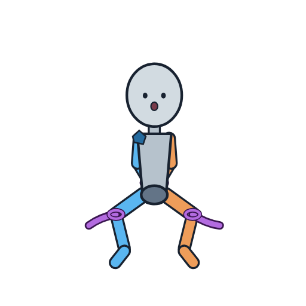
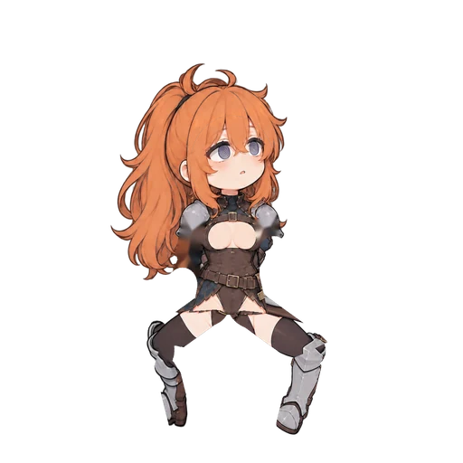
aria__bounce_spread__front__0.png元：gaze_trance__front__0 / heavy__front__1 / sit_recover__front__13 / sit_recover__front__5 / swing_abandon__front__3
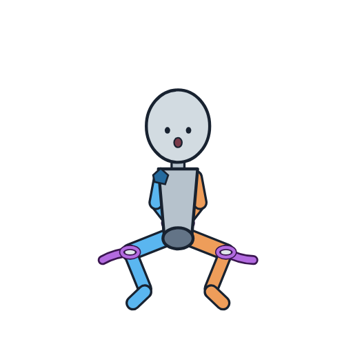
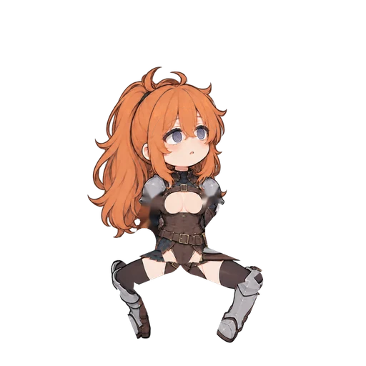
aria__bounce_spread__front__4.png元：gaze_trance__front__0 / heavy__front__1 / sit_recover__front__11 / sit_recover__front__9 / swing_abandon__front__3
拘束を振りほどき、よろけてから構え直す 3枚
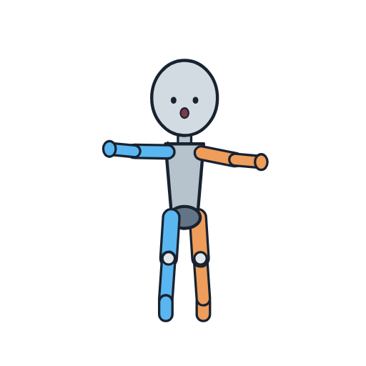
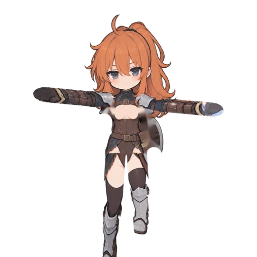
aria__break_free__front__3.png元：bubble_float__front__0 / engulf_sink__front__6 / sit_recover__front__13 / swing_abandon__front__3 / yoko__front__7
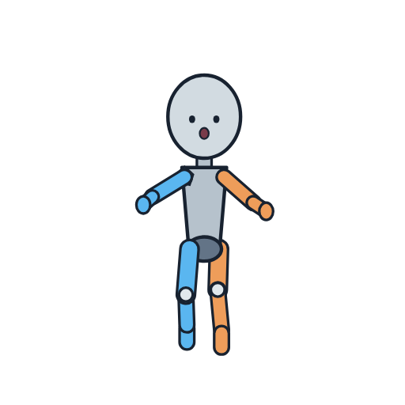
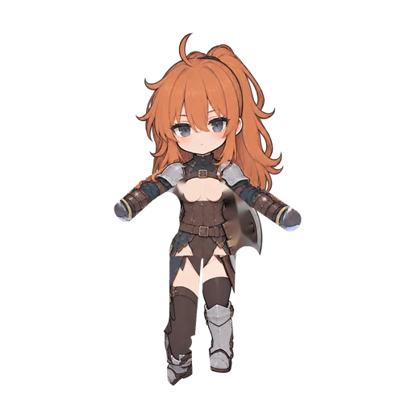
aria__break_free__front__6.png元：bubble_float__front__0 / sit_recover__front__11 / sit_recover__front__13 / swing_abandon__front__3
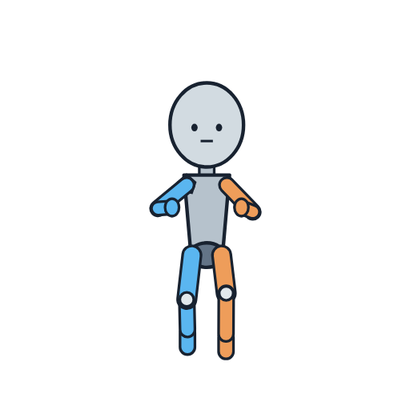
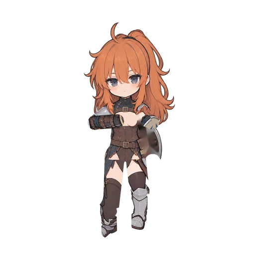
aria__break_free__front__8.png元：grabbed_flinch__front__0 / sit_recover__front__11 / sit_recover__front__13 / slash__front__0 / swing_abandon__front__3
膝を外へ開いて震える 2枚
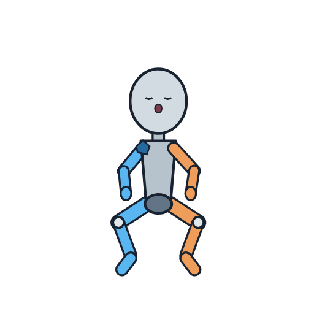
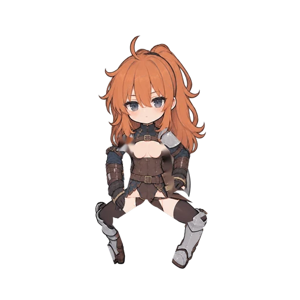
aria__chain_splay__front__0.png元：heavy__front__1 / sit_recover__front__11 / sit_recover__front__13 / sit_recover__front__9 / swing_abandon__front__3
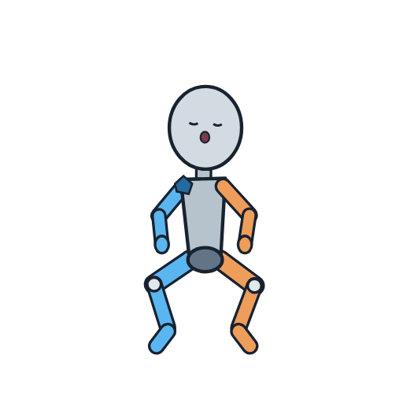
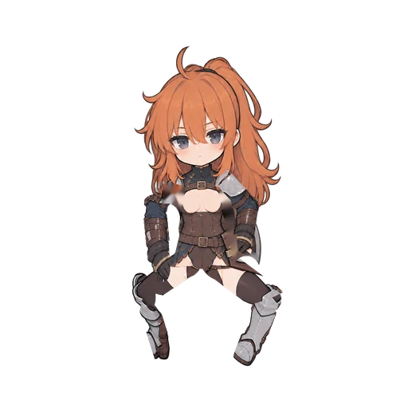
aria__chain_splay__front__3.png元：heavy__front__1 / sit_recover__front__11 / sit_recover__front__13 / sit_recover__front__9 / swing_abandon__front__3
くっつかれたまま、振り払うのをやめる 2枚
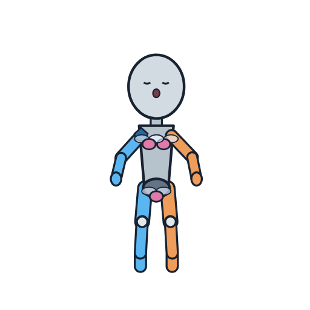
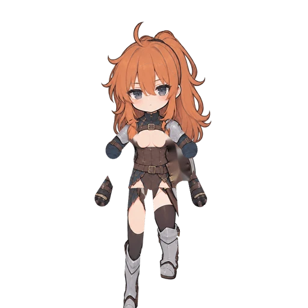
aria__clinger_accept__front__0.png元：sit_recover__front__13 / sit_recover__front__2 / slash__front__7 / swing_abandon__front__3
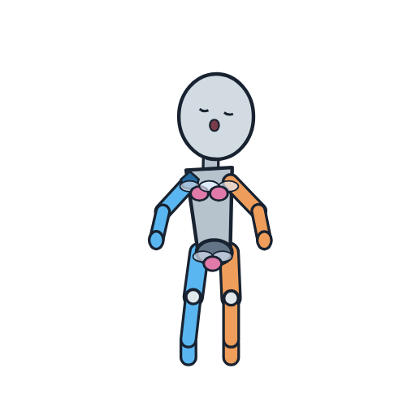
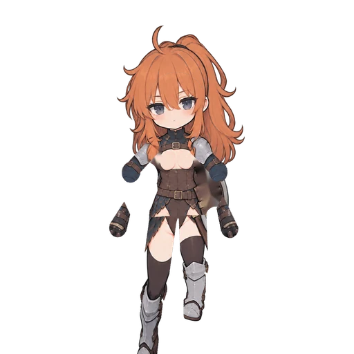
aria__clinger_accept__front__2.png元：sit_recover__front__13 / sit_recover__front__2 / swing_abandon__front__3 / yoko__front__7
くっつかれたまま座り込んで息をする 1枚
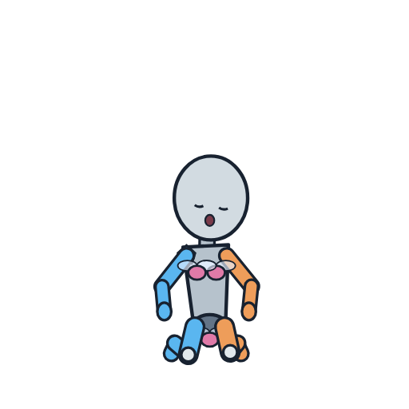
aria__clinger_afterglow__front__5.png元：sit_recover__front__2 / sit_recover__front__5 / sit_recover__front__9
体の前にくっついた小さな生き物を剥がそうとする 3枚
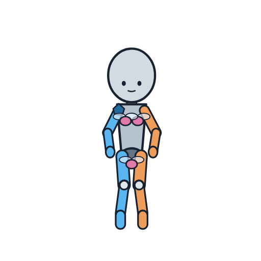
aria__clinger_peel__front__0.png元：sit_recover__front__13
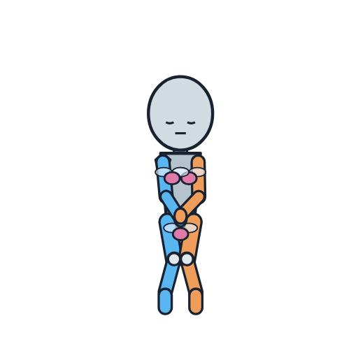
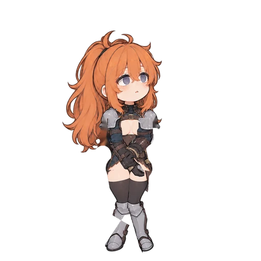
aria__clinger_peel__front__20.png元：daze_sway__front__0 / daze_sway__front__2 / gaze_trance__front__0 / sit_recover__front__9
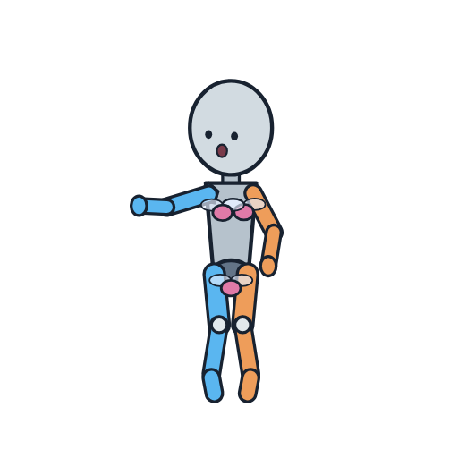
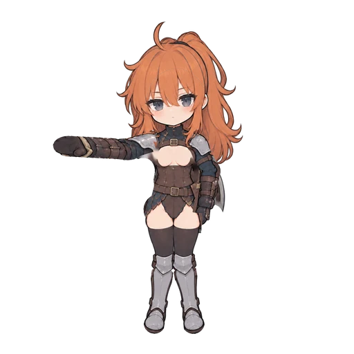
aria__clinger_peel__front__7.png元：engulf_sink__front__6 / sit_recover__front__13
くっつかれたまま立ち上がる 1枚
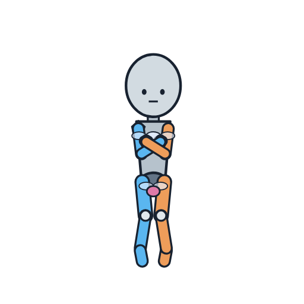
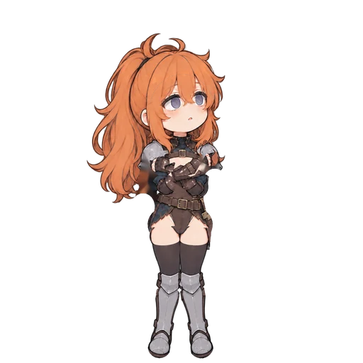
aria__clinger_recover__front__15.png元：gaze_trance__front__0 / shiver_hug__front__0 / sit_recover__front__13
くっつかれたまま全身がこわばり、座り込む 1枚
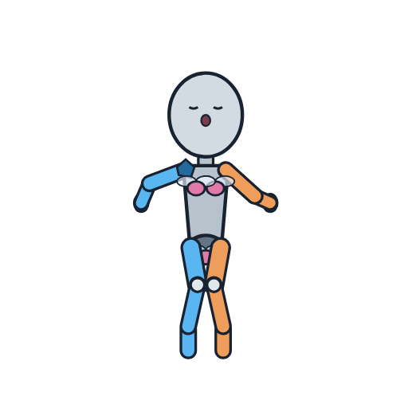
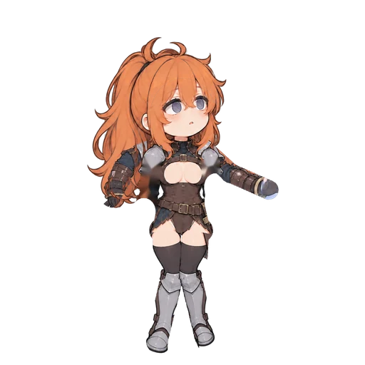
aria__clinger_tension__front__4.png元：bubble_float__front__0 / daze_sway__front__0 / gaze_trance__front__0 / sit_recover__front__9
力尽きて膝から崩れ、うつ伏せに倒れる 4枚
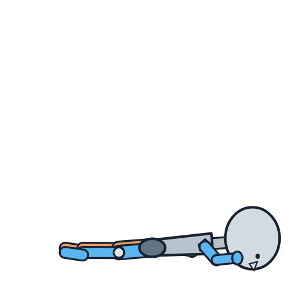
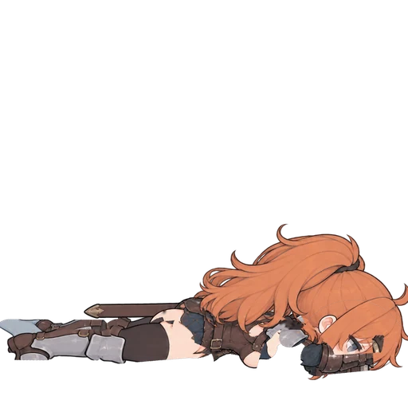
aria__defeat_collapse__right__13.png元：ankle_grabbed__right__4 / kesa__right__7 / thrust__right__4 / trip_fall__right__11 / trip_fall__right__4
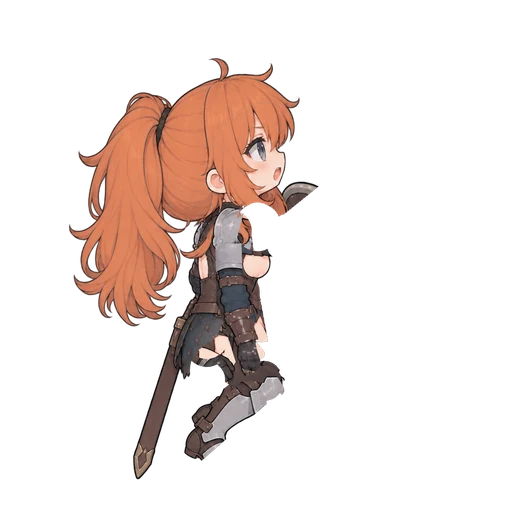
aria__defeat_collapse__right__2.png元：defeat_collapse__right__0 / kiss_recover__right__0 / trip_fall__right__4
aria__defeat_collapse__right__5.png元：kiss_recover__right__0 / trip_fall__right__11 / trip_fall__right__4
aria__defeat_collapse__right__9.png元：get_up__right__13 / heavy__right__6 / kiss_recover__right__8 / trip_fall__right__11
仰向けで力が抜け、肩で息をする 2枚
aria__down_afterglow__down_right__0.png元：get_up__right__13 / get_up__right__4 / sit_recover__front__5 / slash__down_right__0 / yoko__down_right__3
aria__down_afterglow__down_right__5.png元：get_up__right__13 / get_up__right__4 / sit_recover__front__5 / slash__down_right__0 / yoko__down_right__3
うつ伏せで押さえられ、脚をばたつかせてもがく 2枚
aria__down_face_down__right__0.png元：ankle_grabbed__right__4 / heavy__right__3 / kesa__right__7 / trip_fall__right__11 / yoko__right__7
aria__down_face_down__right__4.png元：heavy__right__3 / kesa__right__7 / kiss_recover__right__5 / trip_fall__right__11 / yoko__right__7
膝と胸を床について、体が前後に揺れる 2枚
aria__down_hips_up__right__0.png元：kiss_recover__right__8 / trip_fall__right__11 / trip_fall__right__4
aria__down_hips_up__right__2.png元：kiss_recover__right__8 / trip_fall__right__11 / trip_fall__right__4
仰向けで両手首を頭の上に押さえられ、脚をばたつかせる 2枚
aria__down_pinned_kick__right__0.png元：get_up__right__4 / get_up__right__8 / thrust__right__4
aria__down_pinned_kick__right__2.png元：get_up__right__0 / get_up__right__4 / get_up__right__8 / heavy__right__7 / thrust__right__4
仰向けで押さえられたまま、体が前後に揺れる 2枚
aria__down_pinned_rock__down_right__0.png元：defeat_collapse__right__0 / engulf_sink__front__6 / get_up__right__0 / get_up__right__4 / get_up__right__8
aria__down_pinned_rock__down_right__3.png元：defeat_collapse__right__0 / engulf_sink__front__6 / get_up__right__0 / get_up__right__4
仰向けで手首を押さえられ、立てた膝を左右へ引かれる 2枚
aria__down_pinned_spread__down_right__0.png元：defeat_collapse__right__0 / engulf_sink__front__6 / get_up__right__4
aria__down_pinned_spread__down_right__6.png元：defeat_collapse__right__0 / engulf_sink__front__6 / get_up__right__0 / get_up__right__4
仰向けで我に返り、膝を閉じて体を起こしかける 1枚
aria__down_recover__down_right__2.png元：get_up__right__0 / get_up__right__13 / get_up__right__4 / slash__down_right__0 / yoko__down_right__3
仰向けで押さえられたまま全身がこわばる 3枚
aria__down_tension__down_right__0.png元：defeat_collapse__right__0 / engulf_sink__front__6 / get_up__right__0 / get_up__right__4
aria__down_tension__down_right__12.png元：defeat_collapse__right__0 / engulf_sink__front__6 / get_up__right__13 / get_up__right__4 / sit_recover__front__5
aria__down_tension__down_right__3.png元：heavy__down_right__1 / heavy__down_right__3 / swing_abandon__down_right__3
両手首を上から吊られ、腕を引き下ろそうと力む 2枚
aria__elbows_up_strain__front__0.png元：gaze_trance__front__1 / heavy__front__1 / shiver_hug__front__4 / sit_recover__front__13 / thrust__front__4
aria__elbows_up_strain__front__2.png元：daze_sway__front__0 / shiver_hug__front__0 / sit_recover__front__13 / thrust__front__4 / yoko__front__3
腰まで塊に沈んだまま、ときどき体が跳ねる 2枚

aria__engulf_rock__front__0.png元：sit_recover__front__11 / sit_recover__front__13
aria__engulf_rock__front__1.png元：sit_recover__front__11 / sit_recover__front__13
腰まで沈んだまま、上体をひねって抜け出そうとする 2枚
aria__engulf_struggle__front__0.png元：sit_recover__front__11 / sit_recover__front__13
aria__engulf_struggle__front__6.png元：sit_recover__front__11 / sit_recover__front__13
腰まで沈んだまま全身がこわばり、前へ崩れる 4枚
aria__engulf_tension__front__0.png元：sit_recover__front__11 / sit_recover__front__13
aria__engulf_tension__front__10.png元：sit_recover__front__11 / sit_recover__front__13
aria__engulf_tension__front__2.png元：engulf_sink__front__6 / sit_recover__front__13 / slash__front__7
aria__engulf_tension__front__6.png元：heavy__front__3 / sit_recover__front__13 / thrust__front__4
後ろ手で、膝を閉じたまま体が前後に揺れる 2枚
aria__hip_rock_closed__front__0.png元：gaze_trance__front__0 / sit_recover__front__11 / sit_recover__front__13 / sit_recover__front__9
aria__hip_rock_closed__front__3.png元：daze_sway__front__0 / gaze_trance__front__0 / sit_recover__front__9
後ろ手で、足を開いて立ったまま体が前後に揺れる 2枚
aria__hip_rock_spread__front__0.png元：gaze_trance__front__0 / heavy__front__1 / sit_recover__front__11 / sit_recover__front__9 / swing_abandon__front__3
aria__hip_rock_spread__front__3.png元：gaze_trance__front__0 / heavy__front__1 / sit_recover__front__9 / swing_abandon__front__3
袈裟懸け（右上から左下への斜め斬り） 1枚
aria__kesa__up_right__6.png元：heavy__up_right__6 / slash__up_right__6 / yoko__up_right__6
相手が離れたあと、ふらついて息を整える 2枚
aria__kiss_afterglow__right__0.png元：kiss_recover__right__0
aria__kiss_afterglow__right__5.png元：kiss_recover__right__0
顔を寄せられて押し返そうとする 2枚
aria__kiss_forced__right__0.png元：get_up__right__18 / kiss_recover__right__10 / kiss_recover__right__8
aria__kiss_forced__right__6.png元：get_up__right__18 / kiss_recover__right__10 / kiss_recover__right__8 / trip_fall__right__4
爪先立ちで相手に身を寄せる 2枚
aria__kiss_respond__right__0.png元：get_up__right__18 / heavy__right__3 / kiss_recover__right__8 / yoko__right__6
aria__kiss_respond__right__6.png元：get_up__right__18 / heavy__right__3 / kiss_recover__right__8 / yoko__right__6
顔を寄せられたまま全身がこわばり、膝が崩れる 3枚
aria__kiss_tension__right__0.png元：get_up__right__18 / kiss_recover__right__10 / kiss_recover__right__8
aria__kiss_tension__right__3.png元：get_up__right__13 / get_up__right__18 / kiss_recover__right__8 / swing_abandon__right__3
aria__kiss_tension__right__8.png元：get_up__right__16 / heavy__right__3 / kiss_recover__right__0 / thrust__right__2
後ろ手で、膝を左右へ引かれたまま耐える 2枚
aria__legs_held_open__front__0.png元：gaze_trance__front__0 / heavy__front__1 / sit_recover__front__11 / sit_recover__front__9 / swing_abandon__front__3
aria__legs_held_open__front__2.png元：gaze_trance__front__0 / heavy__front__1 / sit_recover__front__9 / swing_abandon__front__3
後ろ手で、膝を左右へ引かれる 2枚
aria__legs_pulled_open__front__0.png元：gaze_trance__front__0 / shiver_hug__front__0 / sit_recover__front__11 / sit_recover__front__9
aria__legs_pulled_open__front__7.png元：gaze_trance__front__0 / heavy__front__1 / sit_recover__front__9 / swing_abandon__front__3
脱力から我に返り、立ち直る 2枚
aria__recover_slump__front__0.png元：daze_sway__front__0 / daze_sway__front__2 / sit_recover__front__11
aria__recover_slump__front__2.png元：daze_sway__front__0 / gaze_trance__front__0 / sit_recover__front__11
脚を左右に折って座り、息を整える 1枚
aria__sit_afterglow__front__0.png元：sit_recover__front__2 / sit_recover__front__5 / slash__front__0 / spore_inhale__front__0
片手を胸、片手を太ももに当てて立つポーズ 2枚
aria__tempt_pose__front__0.png元：gaze_trance__front__0 / shiver_hug__front__0 / swing_abandon__front__3 / yoko__front__6
aria__tempt_pose__front__6.png元：gaze_trance__front__0 / shiver_hug__front__0 / swing_abandon__front__3 / yoko__front__6
背中を反らせてこわばり、そのあと力が抜ける 2枚
aria__tension_arch__front__0.png元：gaze_trance__front__0 / sit_recover__front__11 / sit_recover__front__13 / sit_recover__front__9
aria__tension_arch__front__3.png元：daze_sway__front__0 / daze_sway__front__2 / gaze_trance__front__0
立ったまま全身がこわばり、座り込む 4枚
aria__tension_free__front__0.png元：daze_sway__front__0 / gaze_trance__front__0 / shiver_hug__front__0 / sit_recover__front__13
aria__tension_free__front__11.png元：daze_sway__front__0 / daze_sway__front__2 / sit_recover__front__11 / sit_recover__front__9

aria__tension_free__front__13.png元：sit_recover__front__2 / sit_recover__front__5 / slash__front__0 / spore_inhale__front__0
aria__tension_free__front__4.png元：daze_sway__front__0 / gaze_trance__front__0 / shiver_hug__front__0
全身がこわばって爪先立ち、そのあと力が抜ける 2枚
aria__tension_tiptoe__front__0.png元：gaze_trance__front__0 / heavy__front__1 / sit_recover__front__11 / sit_recover__front__9 / swing_abandon__front__3
aria__tension_tiptoe__front__3.png元：gaze_trance__front__0 / sit_recover__front__9 / swing_abandon__front__3 / yoko__front__3
突き 1枚
aria__thrust__up_right__4.png元：slash__up_right__7 / yoko__up_right__6
つまずいて手と膝をつき、起き上がる 3枚
aria__trip_fall__right__13.png元：trip_fall__right__11
aria__trip_fall__right__18.png元：get_up__right__13 / trip_fall__right__11 / trip_fall__right__4
aria__trip_fall__right__20.png元：get_up__right__16 / get_up__right__18 / kiss_recover__right__0
腕ごと胴に巻きつかれ、締めつけられる 1枚
aria__wrap_squeeze__front__0.png元：gaze_trance__front__0 / gaze_trance__front__1 / shiver_hug__front__4 / sit_recover__front__13
巻きつかれたまま全身がこわばり、力が抜ける 3枚
aria__wrap_tension__front__0.png元：gaze_trance__front__0 / sit_recover__front__13
aria__wrap_tension__front__2.png元：daze_sway__front__0 / shiver_hug__front__0 / sit_recover__front__13
aria__wrap_tension__front__8.png元：daze_sway__front__0 / daze_sway__front__2 / sit_recover__front__11 / sit_recover__front__13
横一文字（右から左への水平斬り） 1枚
aria__yoko__up_right__7.png元：heavy__up_right__3 / slash__up_right__7
斥候（シーフ） 85枚
力が抜けて前へ崩れ、うなだれる 2枚
scout__afterglow_slump__front__0.png元：daze_sway__front__0 / daze_sway__front__2 / sit_recover__front__11
scout__afterglow_slump__front__5.png元：daze_sway__front__0 / daze_sway__front__2 / sit_recover__front__11
力が抜けて、拘束にもたれてうなだれる 2枚
scout__afterglow_spread__front__0.png元：scout_knife_combo__front__6 / scout_sidestep__front__5 / sit_recover__front__11
scout__afterglow_spread__front__5.png元：scout_knife_combo__front__6 / scout_sidestep__front__5 / sit_recover__front__11
後ろ手に縛られて身をよじる 2枚
scout__arms_behind_squirm__front__0.png元：gaze_trance__front__1 / scout_sense__front__4 / shiver_hug__front__4 / sit_recover__front__9
scout__arms_behind_squirm__front__2.png元：daze_sway__front__2 / gaze_trance__front__1 / scout_throw__front__16 / sit_recover__front__5
後ろ手に縛られて振りほどこうとする 2枚
scout__arms_behind_wrench__front__0.png元：daze_sway__front__0 / gaze_trance__front__1 / shiver_hug__front__4 / sit_recover__front__13 / sit_recover__front__5
scout__arms_behind_wrench__front__5.png元：daze_sway__front__0 / daze_sway__front__2 / gaze_trance__front__1 / sit_recover__front__13 / sit_recover__front__5
前屈みで手首を前に縛られ、体を左右に揺らす 2枚
scout__bent_over__up_right__0.png元：scout_knife_combo__up_right__11 / scout_sidestep__up_right__5 / scout_throw__up_right__16
scout__bent_over__up_right__2.png元：scout_knife_combo__up_right__11 / scout_sidestep__up_right__5 / scout_throw__up_right__16
手首を上から吊られたまま体が上下に揺れる 2枚
scout__bounce_hung__front__0.png元：scout_knife_combo__front__6 / scout_sidestep__front__5 / scout_throw__front__13 / scout_throw__front__6 / sit_recover__front__13
scout__bounce_hung__front__4.png元：scout_knife_combo__front__6 / scout_sidestep__front__5 / scout_throw__front__13 / scout_throw__front__6 / sit_recover__front__11
後ろ手で、足を開いて立ったまま体が上下に揺れる 2枚
scout__bounce_spread__front__0.png元：gaze_trance__front__1 / scout_knife_combo__front__6 / scout_sidestep__front__5 / sit_recover__front__13 / sit_recover__front__5
scout__bounce_spread__front__4.png元：gaze_trance__front__1 / scout_knife_combo__front__6 / scout_sidestep__front__5 / sit_recover__front__11 / sit_recover__front__9
膝を外へ開いて震える 2枚
scout__chain_splay__front__0.png元：scout_knife_combo__front__6 / scout_sidestep__front__5 / sit_recover__front__11 / sit_recover__front__13 / sit_recover__front__9
scout__chain_splay__front__3.png元：scout_knife_combo__front__6 / scout_sidestep__front__5 / sit_recover__front__11 / sit_recover__front__13 / sit_recover__front__9
くっつかれたまま、振り払うのをやめる 2枚
scout__clinger_accept__front__0.png元：scout_sidestep__front__3 / sit_recover__front__13 / sit_recover__front__2
scout__clinger_accept__front__2.png元：scout_sidestep__front__3 / sit_recover__front__13 / sit_recover__front__2
くっつかれたまま座り込んで息をする 1枚
scout__clinger_afterglow__front__5.png元：sit_recover__front__2 / sit_recover__front__5 / sit_recover__front__9
体の前にくっついた小さな生き物を剥がそうとする 3枚
scout__clinger_peel__front__0.png元：scout_sense__front__0 / sit_recover__front__13
scout__clinger_peel__front__20.png元：daze_sway__front__0 / daze_sway__front__2 / gaze_trance__front__1 / sit_recover__front__9
scout__clinger_peel__front__7.png元：scout_knife_combo__front__2 / scout_sense__front__0 / sit_recover__front__13
くっつかれたまま立ち上がる 1枚
scout__clinger_recover__front__15.png元：scout_sense__front__0 / shiver_hug__front__0 / shiver_hug__front__4 / sit_recover__front__13
くっつかれたまま全身がこわばり、座り込む 1枚
scout__clinger_tension__front__4.png元：bubble_float__front__0 / daze_sway__front__0 / sit_recover__front__13 / sit_recover__front__9
仰向けで力が抜け、肩で息をする 2枚
scout__down_afterglow__down_right__0.png元：scout_pack_adjust__down_right__3 / scout_sidestep__down_right__5 / scout_throw__down_right__6
scout__down_afterglow__down_right__5.png元：scout_pack_adjust__down_right__3 / scout_sidestep__down_right__5 / scout_throw__down_right__6
うつ伏せで押さえられ、脚をばたつかせてもがく 2枚
scout__down_face_down__right__0.png元：defeat_collapse__right__13 / scout_throw__right__13 / trip_fall__right__4
scout__down_face_down__right__4.png元：defeat_collapse__right__13 / defeat_collapse__right__9 / scout_throw__right__13 / trip_fall__right__4
膝と胸を床について、体が前後に揺れる 2枚
scout__down_hips_up__right__0.png元：kiss_recover__right__8 / trip_fall__right__11 / trip_fall__right__13 / trip_fall__right__4
scout__down_hips_up__right__2.png元：kiss_recover__right__8 / trip_fall__right__11 / trip_fall__right__13 / trip_fall__right__4
仰向けで両手首を頭の上に押さえられ、脚をばたつかせる 2枚
scout__down_pinned_kick__right__0.png元：get_up__right__4 / get_up__right__8
scout__down_pinned_kick__right__2.png元：get_up__right__0 / get_up__right__4 / get_up__right__8
仰向けで押さえられたまま、体が前後に揺れる 2枚
scout__down_pinned_rock__down_right__0.png元：scout_sidestep__down_right__5 / scout_throw__down_right__16 / scout_throw__down_right__6
scout__down_pinned_rock__down_right__3.png元：scout_sidestep__down_right__5 / scout_throw__down_right__16 / scout_throw__down_right__6
仰向けで手首を押さえられ、立てた膝を左右へ引かれる 2枚
scout__down_pinned_spread__down_right__0.png元：scout_sidestep__down_right__3 / scout_sidestep__down_right__5 / scout_throw__down_right__16 / scout_throw__down_right__6
scout__down_pinned_spread__down_right__6.png元：scout_sidestep__down_right__5 / scout_throw__down_right__16 / scout_throw__down_right__6
仰向けで我に返り、膝を閉じて体を起こしかける 1枚
scout__down_recover__down_right__2.png元：scout_pack_adjust__down_right__3 / scout_sidestep__down_right__3 / scout_sidestep__down_right__5 / scout_throw__down_right__6
仰向けで押さえられたまま全身がこわばる 3枚
scout__down_tension__down_right__0.png元：scout_sidestep__down_right__5 / scout_throw__down_right__16 / scout_throw__down_right__6
scout__down_tension__down_right__12.png元：scout_sidestep__down_right__5 / scout_throw__down_right__16 / scout_throw__down_right__6
scout__down_tension__down_right__3.png元：scout_sidestep__down_right__3 / scout_sidestep__down_right__5 / scout_throw__down_right__16 / scout_throw__down_right__6
両手首を上から吊られ、腕を引き下ろそうと力む 2枚
scout__elbows_up_strain__front__0.png元：scout_sense__front__8 / scout_throw__front__6 / shiver_hug__front__4 / sit_recover__front__13
scout__elbows_up_strain__front__2.png元：daze_sway__front__0 / scout_throw__front__6 / shiver_hug__front__0 / sit_recover__front__13
腰まで塊に沈んだまま、ときどき体が跳ねる 2枚
scout__engulf_rock__front__0.png元：scout_sense__front__0 / sit_recover__front__11 / sit_recover__front__13
scout__engulf_rock__front__1.png元：scout_sense__front__0 / sit_recover__front__11 / sit_recover__front__13
腰まで沈んだまま全身がこわばり、前へ崩れる 4枚

scout__engulf_tension__front__0.png元：scout_sense__front__0 / sit_recover__front__11 / sit_recover__front__13
scout__engulf_tension__front__10.png元：scout_sense__front__0 / sit_recover__front__11
scout__engulf_tension__front__2.png元：engulf_sink__front__6 / scout_sense__front__0 / scout_throw__front__13 / sit_recover__front__13
scout__engulf_tension__front__6.png元：scout_sense__front__0 / scout_throw__front__13 / scout_throw__front__6 / sit_recover__front__13
後ろ手で、膝を閉じたまま体が前後に揺れる 2枚
scout__hip_rock_closed__front__0.png元：scout_sense__front__0 / sit_recover__front__11 / sit_recover__front__13 / sit_recover__front__9
scout__hip_rock_closed__front__3.png元：daze_sway__front__0 / gaze_trance__front__1 / sit_recover__front__9
後ろ手で、足を開いて立ったまま体が前後に揺れる 2枚
scout__hip_rock_spread__front__0.png元：scout_knife_combo__front__6 / scout_sidestep__front__5 / sit_recover__front__11 / sit_recover__front__13 / sit_recover__front__9
scout__hip_rock_spread__front__3.png元：gaze_trance__front__1 / scout_knife_combo__front__6 / scout_sidestep__front__5 / sit_recover__front__9
相手が離れたあと、ふらついて息を整える 2枚
scout__kiss_afterglow__right__0.png元：kiss_recover__right__0 / trip_fall__right__0
scout__kiss_afterglow__right__5.png元：kiss_recover__right__0 / kiss_recover__right__5 / trip_fall__right__0
顔を寄せられて押し返そうとする 2枚
scout__kiss_forced__right__0.png元：kiss_recover__right__10 / kiss_recover__right__8 / scout_dash_stop__right__9
scout__kiss_forced__right__6.png元：kiss_recover__right__10 / kiss_recover__right__8 / scout_throw__right__6
爪先立ちで相手に身を寄せる 2枚
scout__kiss_respond__right__0.png元：kiss_recover__right__8 / scout_throw__right__13 / trip_fall__right__0 / trip_fall__right__4
scout__kiss_respond__right__6.png元：kiss_recover__right__8 / scout_throw__right__13 / trip_fall__right__0 / trip_fall__right__4
顔を寄せられたまま全身がこわばり、膝が崩れる 3枚
scout__kiss_tension__right__0.png元：kiss_recover__right__10 / kiss_recover__right__8 / scout_dash_stop__right__9
scout__kiss_tension__right__3.png元：defeat_collapse__right__9 / kiss_recover__right__8 / scout_throw__right__16
scout__kiss_tension__right__8.png元：get_up__right__16 / kiss_recover__right__5 / scout_dash_stop__right__7 / trip_fall__right__0
後ろ手で、膝を左右へ引かれたまま耐える 2枚
scout__legs_held_open__front__0.png元：scout_knife_combo__front__6 / scout_sidestep__front__5 / sit_recover__front__11 / sit_recover__front__13 / sit_recover__front__9
scout__legs_held_open__front__2.png元：gaze_trance__front__1 / scout_knife_combo__front__6 / scout_sidestep__front__5 / sit_recover__front__9
後ろ手で、膝を左右へ引かれる 2枚
scout__legs_pulled_open__front__0.png元：gaze_trance__front__1 / scout_sense__front__4 / shiver_hug__front__0 / sit_recover__front__11 / sit_recover__front__9
scout__legs_pulled_open__front__7.png元：scout_knife_combo__front__6 / scout_sidestep__front__5 / sit_recover__front__13 / sit_recover__front__9
脱力から我に返り、立ち直る 2枚
scout__recover_slump__front__0.png元：daze_sway__front__0 / daze_sway__front__2 / sit_recover__front__11
scout__recover_slump__front__2.png元：daze_sway__front__0 / gaze_trance__front__1 / sit_recover__front__11
全身がこわばって尻尾が逆立ち、膝が崩れる 3枚
scout__scout_tension__front__0.png元：break_free__front__8 / grabbed_flinch__front__0 / scout_sense__front__0 / sit_recover__front__13
scout__scout_tension__front__2.png元：break_free__front__8 / gaze_trance__front__0 / gaze_trance__front__1 / grabbed_flinch__front__0 / scout_sense__front__8
scout__scout_tension__front__8.png元：daze_sway__front__0 / daze_sway__front__2 / sit_recover__front__11 / sit_recover__front__5
脚を左右に折って座り、息を整える 1枚

scout__sit_afterglow__front__0.png元：scout_knife_combo__front__0 / scout_sense__front__8 / sit_recover__front__2 / sit_recover__front__5
片手を胸、片手を太ももに当てて立つポーズ 2枚
scout__tempt_pose__front__0.png元：gaze_trance__front__0 / gaze_trance__front__1 / scout_knife_combo__front__6 / scout_sidestep__front__5 / shiver_hug__front__0
scout__tempt_pose__front__6.png元：gaze_trance__front__0 / scout_knife_combo__front__6 / scout_sidestep__front__5 / shiver_hug__front__0 / sit_recover__front__13
背中を反らせてこわばり、そのあと力が抜ける 2枚
scout__tension_arch__front__0.png元：scout_sense__front__0 / sit_recover__front__11 / sit_recover__front__13 / sit_recover__front__9
scout__tension_arch__front__3.png元：daze_sway__front__0 / daze_sway__front__2 / gaze_trance__front__0 / gaze_trance__front__1
立ったまま全身がこわばり、座り込む 4枚
scout__tension_free__front__0.png元：daze_sway__front__0 / scout_sense__front__0 / shiver_hug__front__0 / sit_recover__front__13
scout__tension_free__front__11.png元：daze_sway__front__2 / held_from_behind__front__2 / sit_recover__front__11 / sit_recover__front__9
scout__tension_free__front__13.png元：scout_knife_combo__front__0 / scout_sense__front__8 / sit_recover__front__2 / sit_recover__front__5
scout__tension_free__front__4.png元：daze_sway__front__0 / gaze_trance__front__0 / gaze_trance__front__1 / shiver_hug__front__0
全身がこわばって爪先立ち、そのあと力が抜ける 2枚
scout__tension_tiptoe__front__0.png元：scout_knife_combo__front__6 / scout_sidestep__front__5 / sit_recover__front__11 / sit_recover__front__13 / sit_recover__front__9
scout__tension_tiptoe__front__3.png元：scout_knife_combo__front__6 / scout_sidestep__front__5 / sit_recover__front__13 / sit_recover__front__9
腕ごと胴に巻きつかれ、締めつけられる 1枚
scout__wrap_squeeze__front__0.png元：gaze_trance__front__1 / shiver_hug__front__4 / sit_recover__front__13
巻きつかれたまま全身がこわばり、力が抜ける 3枚
scout__wrap_tension__front__0.png元：scout_sense__front__0 / sit_recover__front__13
scout__wrap_tension__front__2.png元：shiver_hug__front__0 / sit_recover__front__13
scout__wrap_tension__front__8.png元：daze_sway__front__0 / daze_sway__front__2 / sit_recover__front__11 / sit_recover__front__13
魔法使い 101枚
力が抜けて前へ崩れ、うなだれる 2枚
mage__afterglow_slump__front__0.png元：daze_sway__front__0 / mage_area__front__13 / sit_recover__front__11
mage__afterglow_slump__front__5.png元：daze_sway__front__0 / mage_area__front__13 / sit_recover__front__11
力が抜けて、拘束にもたれてうなだれる 2枚
mage__afterglow_spread__front__0.png元：daze_sway__front__0 / mage_area__front__13 / mage_recover__front__3 / sit_recover__front__11
mage__afterglow_spread__front__5.png元：daze_sway__front__0 / mage_area__front__13 / mage_recover__front__3 / sit_recover__front__11
足首をつかまれて後ろへ引かれ、よろけて四つん這いになる 1枚
mage__ankle_grabbed__right__14.png元：ankle_grabbed__right__6 / trip_fall__right__11
後ろ手に縛られて身をよじる 2枚
mage__arms_behind_squirm__front__0.png元：daze_sway__front__0 / gaze_trance__front__0 / sit_recover__front__11
mage__arms_behind_squirm__front__2.png元：daze_sway__front__0 / gaze_trance__front__0 / mage_area__front__13 / sit_recover__front__13
後ろ手に縛られて振りほどこうとする 2枚
mage__arms_behind_wrench__front__0.png元：daze_sway__front__0 / mage_area__front__13 / mage_recover__front__3 / sit_recover__front__13
mage__arms_behind_wrench__front__5.png元：daze_sway__front__0 / daze_sway__front__2 / sit_recover__front__13
前屈みで手首を前に縛られ、体を左右に揺らす 2枚
mage__bent_over__up_right__0.png元：mage_area__up_right__13 / mage_barrier__up_right__4 / mage_bolt__up_right__0
mage__bent_over__up_right__2.png元：mage_area__up_right__13 / mage_barrier__up_right__4 / mage_bolt__up_right__0
手首を上から吊られたまま体が上下に揺れる 2枚
mage__bounce_hung__front__0.png元：mage_area__front__13 / mage_area__front__5 / mage_recover__front__3 / mage_suppress__front__5 / sit_recover__front__13
mage__bounce_hung__front__4.png元：mage_area__front__13 / mage_area__front__5 / mage_recover__front__3 / mage_suppress__front__5 / sit_recover__front__13
後ろ手で、足を開いて立ったまま体が上下に揺れる 2枚
mage__bounce_spread__front__0.png元：mage_area__front__13 / mage_recover__front__3 / sit_recover__front__13
mage__bounce_spread__front__4.png元：daze_sway__front__0 / mage_area__front__13 / mage_recover__front__3 / sit_recover__front__11
膝を外へ開いて震える 2枚
mage__chain_splay__front__0.png元：mage_area__front__13 / mage_recover__front__3 / sit_recover__front__11 / sit_recover__front__13
mage__chain_splay__front__3.png元：mage_area__front__13 / mage_recover__front__3 / sit_recover__front__11 / sit_recover__front__13
くっつかれたまま、振り払うのをやめる 2枚
mage__clinger_accept__front__0.png元：mage_barrier__front__4 / sit_recover__front__11 / sit_recover__front__13 / sit_recover__front__2
mage__clinger_accept__front__2.png元：mage_barrier__front__4 / sit_recover__front__11 / sit_recover__front__13 / sit_recover__front__2
くっつかれたまま座り込んで息をする 1枚
mage__clinger_afterglow__front__5.png元：sit_recover__front__11 / sit_recover__front__13 / sit_recover__front__2
体の前にくっついた小さな生き物を剥がそうとする 3枚
mage__clinger_peel__front__0.png元：mage_bolt__front__0 / sit_recover__front__13
mage__clinger_peel__front__20.png元：daze_sway__front__0 / mage_area__front__13 / sit_recover__front__11
mage__clinger_peel__front__7.png元：break_free__front__3 / mage_bolt__front__0 / sit_recover__front__13
くっつかれたまま立ち上がる 1枚
mage__clinger_recover__front__15.png元：break_free__front__8 / daze_sway__front__0 / mage_bolt__front__0 / mage_overheat__front__0
くっつかれたまま全身がこわばり、座り込む 1枚
mage__clinger_tension__front__4.png元：daze_sway__front__0 / mage_area__front__13 / sit_recover__front__11 / sit_recover__front__13
力尽きて膝から崩れ、うつ伏せに倒れる 4枚
mage__defeat_collapse__right__13.png元：ankle_grabbed__right__6 / get_up__right__4 / trip_fall__right__0 / trip_fall__right__11 / trip_fall__right__4
mage__defeat_collapse__right__2.png元：defeat_collapse__right__0 / kiss_recover__right__0 / trip_fall__right__0
mage__defeat_collapse__right__5.png元：kiss_recover__right__0 / trip_fall__right__11 / trip_fall__right__4
mage__defeat_collapse__right__9.png元：get_up__right__13 / trip_fall__right__11
仰向けで力が抜け、肩で息をする 2枚
mage__down_afterglow__down_right__0.png元：mage_area__down_right__13 / mage_area__down_right__5 / mage_bolt__down_right__3
mage__down_afterglow__down_right__5.png元：mage_area__down_right__13 / mage_area__down_right__5 / mage_bolt__down_right__3
うつ伏せで押さえられ、脚をばたつかせてもがく 2枚
mage__down_face_down__right__0.png元：ankle_grabbed__right__6 / mage_channel__right__3 / trip_fall__right__0 / trip_fall__right__11 / trip_fall__right__4
mage__down_face_down__right__4.png元：kiss_recover__right__5 / mage_channel__right__3 / trip_fall__right__0 / trip_fall__right__11 / trip_fall__right__4
膝と胸を床について、体が前後に揺れる 2枚
mage__down_hips_up__right__0.png元：trip_fall__right__11 / trip_fall__right__4
mage__down_hips_up__right__2.png元：trip_fall__right__11 / trip_fall__right__4
仰向けで両手首を頭の上に押さえられ、脚をばたつかせる 2枚
mage__down_pinned_kick__right__0.png元：get_up__right__0 / get_up__right__4 / get_up__right__8
mage__down_pinned_kick__right__2.png元：get_up__right__0 / get_up__right__4 / get_up__right__8
仰向けで押さえられたまま、体が前後に揺れる 2枚
mage__down_pinned_rock__down_right__0.png元：mage_area__down_right__13 / mage_area__down_right__5
mage__down_pinned_rock__down_right__3.png元：mage_area__down_right__13 / mage_area__down_right__5
仰向けで手首を押さえられ、立てた膝を左右へ引かれる 2枚
mage__down_pinned_spread__down_right__0.png元：mage_area__down_right__13 / mage_area__down_right__5
mage__down_pinned_spread__down_right__6.png元：mage_area__down_right__13 / mage_area__down_right__5
仰向けで我に返り、膝を閉じて体を起こしかける 1枚
mage__down_recover__down_right__2.png元：mage_area__down_right__13 / mage_area__down_right__5 / mage_bolt__down_right__3
仰向けで押さえられたまま全身がこわばる 3枚
mage__down_tension__down_right__0.png元：mage_area__down_right__13 / mage_area__down_right__5
mage__down_tension__down_right__12.png元：mage_area__down_right__13 / mage_area__down_right__5
mage__down_tension__down_right__3.png元：mage_area__down_right__13 / mage_area__down_right__5
両手首を上から吊られ、腕を引き下ろそうと力む 2枚
mage__elbows_up_strain__front__0.png元：gaze_trance__front__0 / mage_area__front__5 / mage_recover__front__8 / sit_recover__front__13
mage__elbows_up_strain__front__2.png元：daze_sway__front__0 / mage_area__front__5 / mage_recover__front__8 / mage_suppress__front__5 / sit_recover__front__13
腰まで塊に沈んだまま、ときどき体が跳ねる 2枚
mage__engulf_rock__front__0.png元：mage_bolt__front__0 / sit_recover__front__11 / sit_recover__front__13
mage__engulf_rock__front__1.png元：mage_bolt__front__0 / sit_recover__front__11 / sit_recover__front__13
腰まで沈んだまま全身がこわばり、前へ崩れる 4枚

mage__engulf_tension__front__0.png元：mage_bolt__front__0 / sit_recover__front__11 / sit_recover__front__13
mage__engulf_tension__front__10.png元：mage_bolt__front__0 / sit_recover__front__11 / sit_recover__front__13
mage__engulf_tension__front__2.png元：engulf_sink__front__6 / mage_area__front__5 / mage_bolt__front__0 / sit_recover__front__13
mage__engulf_tension__front__6.png元：mage_area__front__5 / mage_bolt__front__0 / sit_recover__front__13
見つめられて動けず、棒立ちのまま小さく頷く 1枚
mage__gaze_trance__front__1.png元：daze_sway__front__0 / gaze_trance__front__0
捕まった瞬間にびくっと跳ね、捕まった所を見下ろす 1枚
mage__grabbed_flinch__front__3.png元：daze_sway__front__0 / mage_recover__front__3 / sit_recover__front__11 / sit_recover__front__13
後ろ手で、膝を閉じたまま体が前後に揺れる 2枚
mage__hip_rock_closed__front__0.png元：daze_sway__front__0 / mage_bolt__front__0 / sit_recover__front__11
mage__hip_rock_closed__front__3.png元：daze_sway__front__0 / mage_area__front__13 / sit_recover__front__11
後ろ手で、足を開いて立ったまま体が前後に揺れる 2枚
mage__hip_rock_spread__front__0.png元：mage_area__front__13 / mage_recover__front__3 / sit_recover__front__11 / sit_recover__front__13
mage__hip_rock_spread__front__3.png元：mage_area__front__13 / mage_recover__front__3 / sit_recover__front__11 / sit_recover__front__13
相手が離れたあと、ふらついて息を整える 2枚
mage__kiss_afterglow__right__0.png元：kiss_recover__right__0 / trip_fall__right__0
mage__kiss_afterglow__right__5.png元：kiss_recover__right__0 / kiss_recover__right__5 / trip_fall__right__0
顔を寄せられて押し返そうとする 2枚
mage__kiss_forced__right__0.png元：kiss_recover__right__10 / kiss_recover__right__5 / mage_bolt__right__0 / trip_fall__right__0
mage__kiss_forced__right__6.png元：kiss_recover__right__10 / kiss_recover__right__5 / mage_area__right__13 / mage_barrier__right__4 / trip_fall__right__0
爪先立ちで相手に身を寄せる 2枚
mage__kiss_respond__right__0.png元：ankle_grabbed__right__6 / kiss_recover__right__8 / mage_area__right__13 / mage_area__right__5 / trip_fall__right__0
mage__kiss_respond__right__6.png元：ankle_grabbed__right__6 / kiss_recover__right__8 / mage_area__right__13 / mage_area__right__5 / trip_fall__right__0
顔を寄せられたまま全身がこわばり、膝が崩れる 3枚
mage__kiss_tension__right__0.png元：kiss_recover__right__10 / kiss_recover__right__5 / mage_bolt__right__0 / trip_fall__right__0
mage__kiss_tension__right__3.png元：get_up__right__13 / mage_area__right__13 / trip_fall__right__0 / trip_fall__right__4
mage__kiss_tension__right__8.png元：get_up__right__16 / kiss_recover__right__5 / trip_fall__right__0
後ろ手で、膝を左右へ引かれたまま耐える 2枚
mage__legs_held_open__front__0.png元：mage_area__front__13 / mage_recover__front__3 / sit_recover__front__11 / sit_recover__front__13
mage__legs_held_open__front__2.png元：mage_area__front__13 / mage_recover__front__3 / sit_recover__front__11 / sit_recover__front__13
後ろ手で、膝を左右へ引かれる 2枚
mage__legs_pulled_open__front__0.png元：daze_sway__front__0 / mage_suppress__front__0 / mage_suppress__front__5 / sit_recover__front__11
mage__legs_pulled_open__front__7.png元：mage_area__front__13 / mage_recover__front__3 / sit_recover__front__11 / sit_recover__front__13
両方の義腕を頭の上でまとめて縛られ、魔法を封じられてもがく 2枚
mage__mage_arms_bound__front__0.png元：gaze_trance__front__0 / mage_suppress__front__0 / sit_recover__front__13 / spore_inhale__front__0
mage__mage_arms_bound__front__2.png元：daze_sway__front__2 / mage_suppress__front__0 / mage_suppress__front__5 / sit_recover__front__13 / spore_inhale__front__0
口を押さえたまま体を丸め、片膝をつく 3枚
mage__mage_suppress_tension__front__0.png元：mage_suppress__front__0 / sit_recover__front__11 / sit_recover__front__13
mage__mage_suppress_tension__front__2.png元：mage_recover__front__8 / mage_suppress__front__0 / mage_suppress__front__5 / sit_recover__front__11 / sit_recover__front__13
mage__mage_suppress_tension__front__6.png元：mage_bolt__front__0 / mage_recover__front__3 / mage_suppress__front__5 / sit_recover__front__11 / sit_recover__front__2
脱力から我に返り、立ち直る 2枚
mage__recover_slump__front__0.png元：daze_sway__front__0 / mage_area__front__13 / sit_recover__front__11
mage__recover_slump__front__2.png元：daze_sway__front__0 / mage_area__front__13 / sit_recover__front__11
自分の体を抱いて小刻みに震え、ときどき跳ねる 2枚
mage__shiver_hug__front__0.png元：daze_sway__front__0 / mage_bolt__front__0 / mage_suppress__front__0 / spore_inhale__front__0
mage__shiver_hug__front__4.png元：daze_sway__front__0 / gaze_trance__front__0 / mage_bolt__front__0 / spore_inhale__front__0
脚を左右に折って座り、息を整える 1枚
mage__sit_afterglow__front__0.png元：mage_bolt__front__0 / sit_recover__front__13 / sit_recover__front__2 / spore_inhale__front__2
座り込んだ所から立ち上がる 2枚
mage__sit_recover__front__5.png元：sit_recover__front__13 / sit_recover__front__2
mage__sit_recover__front__9.png元：mage_recover__front__3 / sit_recover__front__11 / sit_recover__front__2
片手を胸、片手を太ももに当てて立つポーズ 2枚
mage__tempt_pose__front__0.png元：break_free__front__8 / gaze_trance__front__0 / mage_area__front__13 / mage_recover__front__3 / sit_recover__front__13
mage__tempt_pose__front__6.png元：break_free__front__8 / gaze_trance__front__0 / mage_area__front__13 / mage_recover__front__3 / sit_recover__front__13
背中を反らせてこわばり、そのあと力が抜ける 2枚
mage__tension_arch__front__0.png元：daze_sway__front__0 / mage_bolt__front__0 / sit_recover__front__11
mage__tension_arch__front__3.png元：daze_sway__front__0 / gaze_trance__front__0 / mage_area__front__13
立ったまま全身がこわばり、座り込む 4枚
mage__tension_free__front__0.png元：break_free__front__8 / daze_sway__front__0 / mage_bolt__front__0
mage__tension_free__front__11.png元：held_from_behind__front__2 / mage_area__front__13 / sit_recover__front__11 / sit_recover__front__13

mage__tension_free__front__13.png元：mage_bolt__front__0 / sit_recover__front__13 / sit_recover__front__2 / spore_inhale__front__2
mage__tension_free__front__4.png元：break_free__front__8 / daze_sway__front__0 / gaze_trance__front__0
全身がこわばって爪先立ち、そのあと力が抜ける 2枚
mage__tension_tiptoe__front__0.png元：daze_sway__front__0 / mage_area__front__13 / mage_recover__front__3 / sit_recover__front__11
mage__tension_tiptoe__front__3.png元：daze_sway__front__0 / mage_area__front__13 / mage_recover__front__3 / sit_recover__front__11
つまずいて手と膝をつき、起き上がる 3枚
mage__trip_fall__right__13.png元：trip_fall__right__11
mage__trip_fall__right__18.png元：get_up__right__13 / trip_fall__right__0 / trip_fall__right__11
mage__trip_fall__right__20.png元：get_up__right__16 / get_up__right__18 / kiss_recover__right__0 / trip_fall__right__0
腕ごと胴に巻きつかれ、締めつけられる 1枚
mage__wrap_squeeze__front__0.png元：daze_sway__front__0 / gaze_trance__front__0 / sit_recover__front__13
巻きつかれたまま全身がこわばり、力が抜ける 3枚
mage__wrap_tension__front__0.png元：mage_bolt__front__0 / sit_recover__front__13
mage__wrap_tension__front__2.png元：daze_sway__front__0 / mage_suppress__front__5 / sit_recover__front__13
mage__wrap_tension__front__8.png元：daze_sway__front__0 / mage_area__front__13 / sit_recover__front__13
ヒーラー 157枚
力が抜けて前へ崩れ、うなだれる 2枚
healer__afterglow_slump__front__0.png元：healer_purify__front__3 / healer_purify__front__9
healer__afterglow_slump__front__5.png元：healer_purify__front__3 / healer_purify__front__9
力が抜けて、拘束にもたれてうなだれる 2枚
healer__afterglow_spread__front__0.png元：healer_buff__front__8 / healer_disgust__front__4 / healer_purify__front__3 / healer_purify__front__9
healer__afterglow_spread__front__5.png元：healer_buff__front__8 / healer_disgust__front__4 / healer_purify__front__3 / healer_purify__front__9
足首をつかまれて後ろへ引かれ、よろけて四つん這いになる 4枚
healer__ankle_grabbed__right__0.png元：healer_buff__right__0 / healer_run_cover__right__0 / healer_run_cover__right__4
healer__ankle_grabbed__right__14.png元：healer_buff__right__0 / healer_purify__right__9 / healer_run_cover__right__0 / healer_run_cover__right__4
healer__ankle_grabbed__right__4.png元：healer_buff__right__8 / healer_purify__right__9 / healer_run_cover__right__4
healer__ankle_grabbed__right__6.png元：healer_buff__right__8 / healer_purify__right__9 / healer_run_cover__right__4
後ろ手に縛られて身をよじる 2枚
healer__arms_behind_squirm__front__0.png元：healer_pray__front__0 / healer_purify__front__3 / healer_purify__front__9
healer__arms_behind_squirm__front__2.png元：healer_pray__front__0 / healer_purify__front__3 / healer_purify__front__9
後ろ手に縛られて振りほどこうとする 2枚
healer__arms_behind_wrench__front__0.png元：healer_pray__front__0 / healer_purify__front__3 / healer_purify__front__9
healer__arms_behind_wrench__front__5.png元：healer_purify__front__3 / healer_purify__front__9
前屈みで手首を前に縛られ、体を左右に揺らす 2枚
healer__bent_over__up_right__0.png元：healer_purify__up_right__3 / healer_purify__up_right__9
healer__bent_over__up_right__2.png元：healer_buff__up_right__8 / healer_purify__up_right__3 / healer_purify__up_right__9
手首を上から吊られたまま体が上下に揺れる 2枚
healer__bounce_hung__front__0.png元：healer_buff__front__8 / healer_disgust__front__4 / healer_pray__front__0 / healer_purify__front__3
healer__bounce_hung__front__4.png元：healer_buff__front__8 / healer_disgust__front__4 / healer_pray__front__0 / healer_purify__front__3
後ろ手で、足を開いて立ったまま体が上下に揺れる 2枚
healer__bounce_spread__front__0.png元：healer_buff__front__8 / healer_disgust__front__4 / healer_purify__front__3 / healer_purify__front__9
healer__bounce_spread__front__4.png元：healer_buff__front__8 / healer_disgust__front__4 / healer_purify__front__3 / healer_purify__front__9
拘束を振りほどき、よろけてから構え直す 4枚
healer__break_free__front__2.png元：healer_buff__front__8 / healer_disgust__front__4 / healer_purify__front__3 / healer_purify__front__9
healer__break_free__front__3.png元：healer_buff__front__8 / healer_disgust__front__4 / healer_purify__front__3
healer__break_free__front__6.png元：healer_buff__front__8 / healer_disgust__front__4 / healer_purify__front__3
healer__break_free__front__8.png元：healer_buff__front__8 / healer_disgust__front__4
泡に包まれて床から浮き、体を丸めて口をぱくぱくさせる 2枚
healer__bubble_float__front__0.png元：healer_buff__front__8 / healer_disgust__front__4 / healer_purify__front__3
healer__bubble_float__front__2.png元：healer_buff__front__8 / healer_disgust__front__4 / healer_purify__front__3
膝を外へ開いて震える 2枚
healer__chain_splay__front__0.png元：healer_buff__front__8 / healer_disgust__front__4 / healer_purify__front__3 / healer_purify__front__9
healer__chain_splay__front__3.png元：healer_buff__front__8 / healer_disgust__front__4 / healer_purify__front__3 / healer_purify__front__9
くっつかれたまま、振り払うのをやめる 2枚
healer__clinger_accept__front__0.png元：healer_buff__front__8 / healer_disgust__front__4 / healer_purify__front__3 / healer_purify__front__9
healer__clinger_accept__front__2.png元：healer_buff__front__8 / healer_disgust__front__4 / healer_purify__front__3 / healer_purify__front__9
くっつかれたまま座り込んで息をする 1枚
healer__clinger_afterglow__front__5.png元：healer_purify__front__3 / healer_purify__front__9
体の前にくっついた小さな生き物を剥がそうとする 3枚
healer__clinger_peel__front__0.png元：healer_buff__front__8 / healer_disgust__front__4 / healer_purify__front__3 / healer_purify__front__9
healer__clinger_peel__front__20.png元：healer_buff__front__8 / healer_purify__front__3 / healer_purify__front__9
healer__clinger_peel__front__7.png元：healer_buff__front__8 / healer_pray__front__0 / healer_purify__front__3
くっつかれたまま立ち上がる 1枚
healer__clinger_recover__front__15.png元：healer_cover__front__0 / healer_disgust__front__4 / healer_pray__front__0
くっつかれたまま全身がこわばり、座り込む 1枚
healer__clinger_tension__front__4.png元：healer_purify__front__3 / healer_purify__front__9
ぼーっと立ち尽くし、首をかしげてゆらゆら揺れる 2枚
healer__daze_sway__front__0.png元：healer_purify__front__3 / healer_purify__front__9
healer__daze_sway__front__2.png元：healer_purify__front__3 / healer_purify__front__9
力尽きて膝から崩れ、うつ伏せに倒れる 5枚
healer__defeat_collapse__right__0.png元：healer_buff__right__0 / healer_run_cover__right__0 / healer_run_cover__right__4
healer__defeat_collapse__right__13.png元：healer_buff__right__0 / healer_run_cover__right__0 / healer_run_cover__right__4
healer__defeat_collapse__right__2.png元：healer_buff__right__0 / healer_purify__right__9 / healer_run_cover__right__0 / healer_run_cover__right__4
healer__defeat_collapse__right__5.png元：healer_buff__right__0 / healer_purify__right__9 / healer_run_cover__right__0 / healer_run_cover__right__4
healer__defeat_collapse__right__9.png元：healer_buff__right__0 / healer_purify__right__9 / healer_run_cover__right__0 / healer_run_cover__right__4
仰向けで力が抜け、肩で息をする 2枚
healer__down_afterglow__down_right__0.png元：healer_buff__down_right__4 / healer_kneel_heal__down_right__0 / healer_purify__down_right__6 / healer_purify__down_right__9
healer__down_afterglow__down_right__5.png元：healer_buff__down_right__4 / healer_kneel_heal__down_right__0 / healer_purify__down_right__6 / healer_purify__down_right__9
うつ伏せで押さえられ、脚をばたつかせてもがく 2枚
healer__down_face_down__right__0.png元：healer_buff__right__0 / healer_buff__right__8 / healer_run_cover__right__0 / healer_run_cover__right__4
healer__down_face_down__right__4.png元：healer_buff__right__0 / healer_buff__right__8 / healer_run_cover__right__0 / healer_run_cover__right__4
押されて尻もちをつき、仰向けに倒れる 5枚
healer__down_fall_back__right__0.png元：healer_buff__right__0 / healer_buff__right__8 / healer_run_cover__right__4
healer__down_fall_back__right__12.png元：healer_buff__right__0 / healer_run_cover__right__0 / healer_run_cover__right__4
healer__down_fall_back__right__17.png元：healer_buff__right__0 / healer_buff__right__4 / healer_run_cover__right__0 / healer_run_cover__right__4
healer__down_fall_back__right__2.png元：healer_buff__right__8 / healer_purify__right__9 / healer_run_cover__right__4
healer__down_fall_back__right__8.png元：healer_buff__right__0 / healer_purify__right__9 / healer_run_cover__right__0 / healer_run_cover__right__4
膝と胸を床について、体が前後に揺れる 2枚
healer__down_hips_up__right__0.png元：healer_buff__right__0 / healer_purify__right__9 / healer_run_cover__right__0 / healer_run_cover__right__4
healer__down_hips_up__right__2.png元：healer_buff__right__0 / healer_purify__right__9 / healer_run_cover__right__0 / healer_run_cover__right__4
仰向けで両手首を頭の上に押さえられ、脚をばたつかせる 2枚
healer__down_pinned_kick__right__0.png元：healer_buff__right__0 / healer_buff__right__4 / healer_run_cover__right__0 / healer_run_cover__right__4
healer__down_pinned_kick__right__2.png元：healer_buff__right__0 / healer_buff__right__4 / healer_run_cover__right__0 / healer_run_cover__right__4
仰向けで押さえられたまま、体が前後に揺れる 2枚
healer__down_pinned_rock__down_right__0.png元：healer_buff__down_right__4 / healer_kneel_heal__down_right__0 / healer_purify__down_right__6
healer__down_pinned_rock__down_right__3.png元：healer_buff__down_right__4 / healer_kneel_heal__down_right__0 / healer_purify__down_right__6
仰向けで手首を押さえられ、立てた膝を左右へ引かれる 2枚
healer__down_pinned_spread__down_right__0.png元：healer_buff__down_right__4 / healer_kneel_heal__down_right__0 / healer_purify__down_right__6
healer__down_pinned_spread__down_right__6.png元：healer_buff__down_right__4 / healer_kneel_heal__down_right__0 / healer_purify__down_right__6
仰向けで我に返り、膝を閉じて体を起こしかける 1枚
healer__down_recover__down_right__2.png元：healer_buff__down_right__4 / healer_kneel_heal__down_right__0 / healer_purify__down_right__6 / healer_purify__down_right__9
仰向けで押さえられたまま全身がこわばる 3枚
healer__down_tension__down_right__0.png元：healer_buff__down_right__4 / healer_kneel_heal__down_right__0 / healer_purify__down_right__6
healer__down_tension__down_right__12.png元：healer_buff__down_right__4 / healer_kneel_heal__down_right__0 / healer_purify__down_right__6
healer__down_tension__down_right__3.png元：healer_buff__down_right__4 / healer_kneel_heal__down_right__0 / healer_purify__down_right__6
ふらっと一歩寄ってしまい、はっとする 3枚
healer__edge_pull__right__0.png元：healer_buff__right__0 / healer_run_cover__right__0 / healer_run_cover__right__4
healer__edge_pull__right__3.png元：healer_buff__right__0 / healer_purify__right__9 / healer_run_cover__right__0 / healer_run_cover__right__4
healer__edge_pull__right__7.png元：healer_buff__right__0 / healer_run_cover__right__0 / healer_run_cover__right__4
両手首を上から吊られ、腕を引き下ろそうと力む 2枚
healer__elbows_up_strain__front__0.png元：healer_pray__front__0 / healer_purify__front__3
healer__elbows_up_strain__front__2.png元：healer_buff__front__8 / healer_pray__front__0 / healer_purify__front__3 / healer_purify__front__9
腰まで塊に沈んだまま、ときどき体が跳ねる 2枚
healer__engulf_rock__front__0.png元：healer_pray__front__0 / healer_purify__front__3 / healer_purify__front__9
healer__engulf_rock__front__1.png元：healer_buff__front__8 / healer_pray__front__0 / healer_purify__front__3 / healer_purify__front__9
柔らかい塊に足元から腰まで沈んでいく 3枚

healer__engulf_sink__front__0.png元：healer_pray__front__0 / healer_purify__front__3 / healer_purify__front__9
healer__engulf_sink__front__3.png元：healer_buff__front__8 / healer_pray__front__0 / healer_purify__front__3 / healer_purify__front__9
healer__engulf_sink__front__6.png元：healer_buff__front__8 / healer_pray__front__0 / healer_purify__front__3
腰まで沈んだまま、上体をひねって抜け出そうとする 2枚
healer__engulf_struggle__front__0.png元：healer_buff__front__8 / healer_pray__front__0 / healer_purify__front__3 / healer_purify__front__9
healer__engulf_struggle__front__6.png元：healer_pray__front__0 / healer_purify__front__3 / healer_purify__front__9
腰まで沈んだまま全身がこわばり、前へ崩れる 4枚

healer__engulf_tension__front__0.png元：healer_pray__front__0 / healer_purify__front__3 / healer_purify__front__9
healer__engulf_tension__front__10.png元：healer_buff__front__8 / healer_pray__front__0 / healer_purify__front__3 / healer_purify__front__9
healer__engulf_tension__front__2.png元：healer_buff__front__8 / healer_pray__front__0 / healer_purify__front__3
healer__engulf_tension__front__6.png元：healer_buff__front__8 / healer_pray__front__0 / healer_purify__front__3
見つめられて動けず、棒立ちのまま小さく頷く 2枚
healer__gaze_trance__front__0.png元：healer_pray__front__0 / healer_purify__front__3 / healer_purify__front__9
healer__gaze_trance__front__1.png元：healer_pray__front__0 / healer_purify__front__3 / healer_purify__front__9
仰向けから起き上がる 6枚
healer__get_up__right__0.png元：healer_buff__right__0 / healer_buff__right__4 / healer_run_cover__right__0 / healer_run_cover__right__4
healer__get_up__right__13.png元：healer_buff__right__0 / healer_purify__right__9 / healer_run_cover__right__4
healer__get_up__right__16.png元：healer_buff__right__0 / healer_purify__right__9 / healer_run_cover__right__0 / healer_run_cover__right__4
healer__get_up__right__18.png元：healer_buff__right__0 / healer_run_cover__right__0 / healer_run_cover__right__4
healer__get_up__right__4.png元：healer_buff__right__0 / healer_run_cover__right__0 / healer_run_cover__right__4
healer__get_up__right__8.png元：healer_buff__right__0 / healer_run_cover__right__0 / healer_run_cover__right__4
捕まった瞬間にびくっと跳ね、捕まった所を見下ろす 2枚
healer__grabbed_flinch__front__0.png元：healer_buff__front__8 / healer_disgust__front__4 / healer_pray__front__0 / healer_purify__front__3
healer__grabbed_flinch__front__3.png元：healer_buff__front__8 / healer_purify__front__3 / healer_purify__front__9
杖を掲げてから仲間へ向け、加護を与える 3枚
healer__healer_buff__down_left__0.png元：healer_buff__down_left__4 / healer_purify__down_left__3 / healer_purify__down_left__9
healer__healer_buff__front__0.png元：healer_disgust__front__8 / healer_pray__front__0 / healer_purify__front__3
healer__healer_buff__left__8.png元：healer_buff__left__0 / healer_buff__left__4 / healer_purify__left__3
めくれかけた前垂れを押さえ、顔を背ける 2枚
healer__healer_panel_catch__front__3.png元：healer_disgust__front__8 / healer_pray__front__0 / healer_purify__front__3
healer__healer_panel_catch__front__6.png元：healer_disgust__front__4 / healer_disgust__front__8 / healer_pray__front__0 / healer_purify__front__9
杖で床を突き、清めの光を広げる 3枚
healer__healer_purify__down_right__3.png元：healer_buff__down_right__0 / healer_buff__down_right__8 / healer_kneel_heal__down_right__0 / healer_purify__down_right__6
healer__healer_purify__right__3.png元：healer_buff__right__0 / healer_buff__right__8 / healer_run_cover__right__4
healer__healer_purify__right__6.png元：healer_buff__right__0 / healer_purify__right__9 / healer_run_cover__right__4
首を振って拒みながらこわばり、崩れる 3枚
healer__healer_tension_refuse__front__0.png元：healer_cover__front__0 / healer_disgust__front__8 / healer_pray__front__0
healer__healer_tension_refuse__front__2.png元：healer_cover__front__0 / healer_pray__front__0 / healer_purify__front__9
healer__healer_tension_refuse__front__7.png元：healer_buff__front__8 / healer_cover__front__0 / healer_purify__front__9
後ろから腕ごと胴を抱きすくめられ、もがく 2枚
healer__held_from_behind__front__0.png元：healer_buff__front__8 / healer_disgust__front__4 / healer_purify__front__3 / healer_purify__front__9
healer__held_from_behind__front__2.png元：healer_buff__front__8 / healer_purify__front__3 / healer_purify__front__9
後ろ手で、膝を閉じたまま体が前後に揺れる 2枚
healer__hip_rock_closed__front__0.png元：healer_pray__front__0 / healer_purify__front__3 / healer_purify__front__9
healer__hip_rock_closed__front__3.png元：healer_purify__front__3 / healer_purify__front__9
後ろ手で、足を開いて立ったまま体が前後に揺れる 2枚
healer__hip_rock_spread__front__0.png元：healer_buff__front__8 / healer_disgust__front__4 / healer_purify__front__3 / healer_purify__front__9
healer__hip_rock_spread__front__3.png元：healer_buff__front__8 / healer_disgust__front__4 / healer_purify__front__3 / healer_purify__front__9
相手が離れたあと、ふらついて息を整える 2枚

healer__kiss_afterglow__right__0.png元：healer_buff__right__0 / healer_purify__right__9 / healer_run_cover__right__0 / healer_run_cover__right__4
healer__kiss_afterglow__right__5.png元：healer_buff__right__0 / healer_purify__right__9 / healer_run_cover__right__0 / healer_run_cover__right__4
顔を寄せられて押し返そうとする 2枚
healer__kiss_forced__right__0.png元：healer_buff__right__0 / healer_buff__right__8 / healer_run_cover__right__4
healer__kiss_forced__right__6.png元：healer_buff__right__0 / healer_buff__right__8 / healer_purify__right__9 / healer_run_cover__right__4
我に返って口元をぬぐい、一歩下がる 4枚
healer__kiss_recover__right__0.png元：healer_buff__right__0 / healer_purify__right__9 / healer_run_cover__right__0 / healer_run_cover__right__4
healer__kiss_recover__right__10.png元：healer_buff__right__0 / healer_buff__right__8 / healer_run_cover__right__4
healer__kiss_recover__right__5.png元：healer_buff__right__0 / healer_purify__right__9 / healer_run_cover__right__4
healer__kiss_recover__right__8.png元：healer_buff__right__0 / healer_buff__right__8 / healer_purify__right__9 / healer_run_cover__right__4
爪先立ちで相手に身を寄せる 2枚
healer__kiss_respond__right__0.png元：healer_buff__right__0 / healer_buff__right__8 / healer_purify__right__9 / healer_run_cover__right__4
healer__kiss_respond__right__6.png元：healer_buff__right__0 / healer_buff__right__8 / healer_purify__right__9 / healer_run_cover__right__4
顔を寄せられたまま全身がこわばり、膝が崩れる 3枚
healer__kiss_tension__right__0.png元：healer_buff__right__0 / healer_buff__right__8 / healer_run_cover__right__4
healer__kiss_tension__right__3.png元：healer_buff__right__8 / healer_purify__right__9 / healer_run_cover__right__4
healer__kiss_tension__right__8.png元：healer_buff__right__0 / healer_purify__right__9 / healer_run_cover__right__0 / healer_run_cover__right__4
後ろ手で、膝を左右へ引かれたまま耐える 2枚
healer__legs_held_open__front__0.png元：healer_buff__front__8 / healer_disgust__front__4 / healer_purify__front__3 / healer_purify__front__9
healer__legs_held_open__front__2.png元：healer_buff__front__8 / healer_disgust__front__4 / healer_purify__front__3 / healer_purify__front__9
後ろ手で、膝を左右へ引かれる 2枚
healer__legs_pulled_open__front__0.png元：healer_purify__front__3 / healer_purify__front__9
healer__legs_pulled_open__front__7.png元：healer_buff__front__8 / healer_disgust__front__4 / healer_purify__front__3 / healer_purify__front__9
思わず片手を伸ばして一歩寄り、手を胸に引っ込める 3枚

healer__reach_toward__right__0.png元：healer_buff__right__0 / healer_run_cover__right__0 / healer_run_cover__right__4
healer__reach_toward__right__4.png元：healer_buff__right__0 / healer_purify__right__9 / healer_run_cover__right__4
healer__reach_toward__right__8.png元：healer_buff__right__0 / healer_run_cover__right__4
脱力から我に返り、立ち直る 2枚
healer__recover_slump__front__0.png元：healer_purify__front__3 / healer_purify__front__9
healer__recover_slump__front__2.png元：healer_purify__front__3 / healer_purify__front__9
自分の体を抱いて小刻みに震え、ときどき跳ねる 2枚
healer__shiver_hug__front__0.png元：healer_disgust__front__8 / healer_pray__front__0 / healer_purify__front__9
healer__shiver_hug__front__4.png元：healer_disgust__front__8 / healer_pray__front__0 / healer_purify__front__3
脚を左右に折って座り、息を整える 1枚
healer__sit_afterglow__front__0.png元：healer_purify__front__3 / healer_purify__front__9
座り込んだ所から立ち上がる 5枚
healer__sit_recover__front__11.png元：healer_buff__front__8 / healer_disgust__front__4 / healer_pray__front__0 / healer_purify__front__3 / healer_purify__front__9
healer__sit_recover__front__13.png元：healer_pray__front__0 / healer_purify__front__3 / healer_purify__front__9
healer__sit_recover__front__2.png元：healer_buff__front__8 / healer_purify__front__3 / healer_purify__front__9
healer__sit_recover__front__5.png元：healer_buff__front__8 / healer_purify__front__3 / healer_purify__front__9
healer__sit_recover__front__9.png元：healer_buff__front__8 / healer_disgust__front__4 / healer_purify__front__3 / healer_purify__front__9
胞子を吸い込み、口を覆って顔をそむけ、膝が内に折れる 2枚
healer__spore_inhale__front__0.png元：healer_buff__front__8 / healer_purify__front__3 / healer_purify__front__9
healer__spore_inhale__front__2.png元：healer_buff__front__8 / healer_purify__front__3 / healer_purify__front__9
片手を胸、片手を太ももに当てて立つポーズ 2枚
healer__tempt_pose__front__0.png元：healer_buff__front__8 / healer_disgust__front__4 / healer_purify__front__3
healer__tempt_pose__front__6.png元：healer_buff__front__8 / healer_disgust__front__4 / healer_purify__front__3
背中を反らせてこわばり、そのあと力が抜ける 2枚
healer__tension_arch__front__0.png元：healer_buff__front__8 / healer_pray__front__0 / healer_purify__front__3 / healer_purify__front__9
healer__tension_arch__front__3.png元：healer_purify__front__3 / healer_purify__front__9
立ったまま全身がこわばり、座り込む 4枚
healer__tension_free__front__0.png元：healer_disgust__front__4 / healer_pray__front__0 / healer_purify__front__3
healer__tension_free__front__11.png元：healer_buff__front__8 / healer_purify__front__3 / healer_purify__front__9

healer__tension_free__front__13.png元：healer_purify__front__3 / healer_purify__front__9
healer__tension_free__front__4.png元：healer_disgust__front__4 / healer_purify__front__3 / healer_purify__front__9
全身がこわばって爪先立ち、そのあと力が抜ける 2枚
healer__tension_tiptoe__front__0.png元：healer_buff__front__8 / healer_disgust__front__4 / healer_purify__front__3 / healer_purify__front__9
healer__tension_tiptoe__front__3.png元：healer_buff__front__8 / healer_disgust__front__4 / healer_purify__front__3 / healer_purify__front__9
つまずいて手と膝をつき、起き上がる 6枚
healer__trip_fall__right__0.png元：healer_buff__right__0 / healer_buff__right__8 / healer_run_cover__right__0 / healer_run_cover__right__4
healer__trip_fall__right__11.png元：healer_buff__right__0 / healer_purify__right__9 / healer_run_cover__right__0 / healer_run_cover__right__4
healer__trip_fall__right__13.png元：healer_buff__right__0 / healer_purify__right__9 / healer_run_cover__right__0 / healer_run_cover__right__4
healer__trip_fall__right__18.png元：healer_buff__right__0 / healer_purify__right__9 / healer_run_cover__right__0 / healer_run_cover__right__4
healer__trip_fall__right__20.png元：healer_buff__right__0 / healer_purify__right__9 / healer_run_cover__right__0 / healer_run_cover__right__4
healer__trip_fall__right__4.png元：healer_buff__right__8 / healer_purify__right__9 / healer_run_cover__right__0 / healer_run_cover__right__4
腕ごと胴に巻きつかれ、締めつけられる 1枚
healer__wrap_squeeze__front__0.png元：healer_pray__front__0 / healer_purify__front__3 / healer_purify__front__9
巻きつかれたまま全身がこわばり、力が抜ける 3枚
healer__wrap_tension__front__0.png元：healer_pray__front__0 / healer_purify__front__3 / healer_purify__front__9
healer__wrap_tension__front__2.png元：healer_purify__front__3 / healer_purify__front__9
healer__wrap_tension__front__8.png元：healer_purify__front__3 / healer_purify__front__9